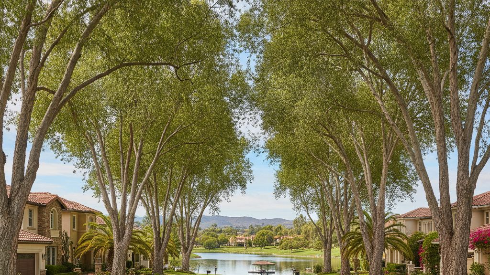

 Carmel Valley92130Phased construction since the 1980s turned the hills behind Del Mar into Carmel Valley, a planned district at the city's northwestern edge that grew outward from Del Mar Highlands.Torrey Hills92130Torrey Hills occupies the western end of the Carmel Valley planning area, sitting above Sorrento Valley and the Los Penasquitos Lagoon and close to the Torrey Pines area.Pacific Highlands Ranch92130Pacific Highlands Ranch is the newest large community in the Carmel Valley area, extending east along State Route 56 from the older tracts.Torrey Highlands92129, 92130Torrey Highlands is a planned neighborhood along the northern part of Camino Del Sur, between Pacific Highlands Ranch and Black Mountain Ranch.Black Mountain Ranch92127, 92129Black Mountain Ranch is a master-planned area in northern San Diego along Camino Del Sur and Black Mountain Road, framed by open space and the hills above Lake Hodges.Del Sur92127Del Sur is a newer planned community in northern San Diego with a village-style layout and homes organized around parks, paseos, and a central commercial node.Santaluz92127Santaluz is a guard-gated golf community in northern San Diego, close to Rancho Santa Fe and 4S Ranch, designed around a private club and hilly terrain.4S Ranch921274S Ranch is a master-planned community northeast of Rancho Bernardo, developed from the late 1990s onward on former ranch land near Lake Hodges.Rancho Bernardo92127, 92128Rancho Bernardo is a master-planned community along the I-15 north of Poway Road, developed mostly from the late 1960s onward.Carmel Mountain Ranch92128Carmel Mountain Ranch occupies the mesa and slopes east of I-15 around the Carmel Mountain Preserve, built out largely during the 1980s and 1990s.Sabre Springs92128Sabre Springs is a small planned community straddling Poway Road and the I-15, tucked against the Poway city line.Rancho Peñasquitos92129Rancho Peñasquitos stretches along Black Mountain Road and Carmel Mountain Road in the northern City of San Diego, with development beginning in the 1970s.Scripps Ranch92131Scripps Ranch is a hillside community in northeastern San Diego, recognizable for its eucalyptus-lined streets and a strong sense of separate identity.
Carmel Valley92130Phased construction since the 1980s turned the hills behind Del Mar into Carmel Valley, a planned district at the city's northwestern edge that grew outward from Del Mar Highlands.Torrey Hills92130Torrey Hills occupies the western end of the Carmel Valley planning area, sitting above Sorrento Valley and the Los Penasquitos Lagoon and close to the Torrey Pines area.Pacific Highlands Ranch92130Pacific Highlands Ranch is the newest large community in the Carmel Valley area, extending east along State Route 56 from the older tracts.Torrey Highlands92129, 92130Torrey Highlands is a planned neighborhood along the northern part of Camino Del Sur, between Pacific Highlands Ranch and Black Mountain Ranch.Black Mountain Ranch92127, 92129Black Mountain Ranch is a master-planned area in northern San Diego along Camino Del Sur and Black Mountain Road, framed by open space and the hills above Lake Hodges.Del Sur92127Del Sur is a newer planned community in northern San Diego with a village-style layout and homes organized around parks, paseos, and a central commercial node.Santaluz92127Santaluz is a guard-gated golf community in northern San Diego, close to Rancho Santa Fe and 4S Ranch, designed around a private club and hilly terrain.4S Ranch921274S Ranch is a master-planned community northeast of Rancho Bernardo, developed from the late 1990s onward on former ranch land near Lake Hodges.Rancho Bernardo92127, 92128Rancho Bernardo is a master-planned community along the I-15 north of Poway Road, developed mostly from the late 1960s onward.Carmel Mountain Ranch92128Carmel Mountain Ranch occupies the mesa and slopes east of I-15 around the Carmel Mountain Preserve, built out largely during the 1980s and 1990s.Sabre Springs92128Sabre Springs is a small planned community straddling Poway Road and the I-15, tucked against the Poway city line.Rancho Peñasquitos92129Rancho Peñasquitos stretches along Black Mountain Road and Carmel Mountain Road in the northern City of San Diego, with development beginning in the 1970s.Scripps Ranch92131Scripps Ranch is a hillside community in northeastern San Diego, recognizable for its eucalyptus-lined streets and a strong sense of separate identity.Have a property that needs a value?
Send the address and the reason for the appraisal. You will get a firm quote and a schedule before anything is booked.